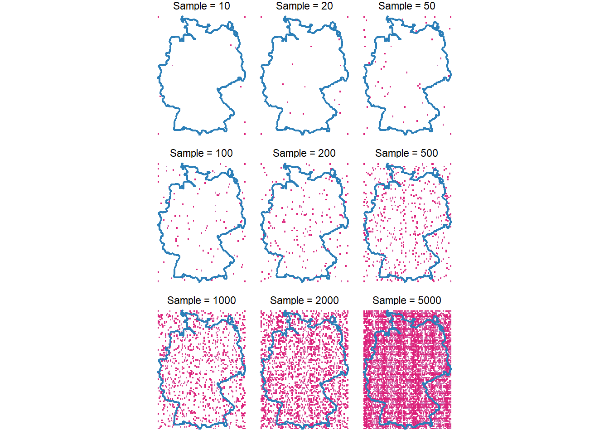

Performance
Why is information on performance important?

Testing, documentation, and performance evaluation are critical throughout the development of an R package. These practices ensure reliability, maintainability, user trust, and a positive user experience. A well-designed package should produce correct and transparent results, function consistently across systems and R versions, and offer performance suitable for real-world applications. Clear documentation, intuitive interfaces, and informative error messages enhance usability and minimize the risk of misuse (Wickham & Bryan 2023).
How are we assessing performance?
CRAN’s standards for package submissions check for performance and correctness. CRAN has established a set of policies regarding quality, copyright, effectiveness and performance (R Core Team).
Packages that help you check the performance of your package
bench: measures execution time, memory use, garbage Collection. Assessing overall performance of funtcions under realistic workloads.
microbenchmark:
profvis:
roxygen2:
pkgdown: Builds websites from package documentation. Enhances accessability and transparency of your package’s functions and usage examples.
cli:
usethis: Automates setup of common package components (e.g. tests, GitHub, licences). Promotes best practices in project structure and consistency, boosting maintainability.
lintr: Static code analysis for R. Identifies style violations and potential coding issues, encouraging clean readable code.
How does gxc work?
Parallel processing
When activating parallel processing tasks are divided into equally sized chunks and directed to multiple CPU cores. Imagine you are baking cookies, in a sequential mode you would use one tray in one oven at a time. Moving to parallel-sequential, here you would use 10 ovens for baking your cookies but only with one tray in each oven. However, in parallel-processing you would use 10 ovens and and multiple trays in each oven at the same time. Thus, when working with so many ovens and trays maybe cookies will burn and you would have to walk between all the different ovens, that is what is called overhead. Overhead is the extra time, resources and effort needed to manage a task, apart from the task itself. In parallel-processing managing multiple threads, sending data to each chunk, retrieve results and synchronizing requires time and memory i.e. overhead. It is the cost of making things faster (R Core Team 2025). The time to run e.g. poly_link() function depends on the number of grid cells i.e. sample size and the time of interest (TOI). The nested loop first iterates through each sampled grid (e.g. different amount of polygons) and then through different TOI. The tictoc package can record the time for this process. For smaller chunks parallel processing creates more overhead and is less efficient. Larger chunks reduce the overhead and perform generally better. For the gxc-package parallel-processing shows the best performance especially for larger sample sizes.
How to increase the speed of your package
You can use the parallel-package in base R (function like lapply(), sapply() or apply()) for parallel computing. In the case they run slow you can apply interfaces to other languages like complied code in Rcpp. A code profiler like the profvis-package can help you find the bottleneck of your code i.e. where the slow code lies. Moreover, your code structure and order affect performance and speed. So start:
Sorting and ordering with algorithms like
c(“shell”, “quick”, “radix”)Converting data frames to (sparse) matrices
Using specialized row and column functions e.g.
apply()-functions from thematrixStats-packageDefining a memory directory
Avoiding copies
Vectorizing your code (works faster than loops)
Choosing the right data type (integers and factors work faster than characters),
Using bytecode compilation
Caching results
Employing
data.tableordplyr-functions
futureverse
The futureverse i.e. future-package is an API for sequential and parallel-processing. The package implements sequential, multicore, multisession and cluster features. Expressions can be evaluated on the local machine, in a parallel set of local machines or distributed on a mix of local and remote machines.
“Future is an abstraction for a value that may be availabe at some point in the future.” (Bengtsson 2024)
Futures can be created implicitly or explicitly, they can be resolved or unresolved and there are different ways of resolving a future. The way of resolution can be defined by choosing a fitting backend/ package e.g. sequential resolves futures sequentially and in the current R process whereas multisessionresolves futures parallely via a background R session on the current machine. The backend needs to be specified by the user to optimize functionality though there are some defaults for all backends:
- evaluation on local environment (unless defined otherwise),
- global variables are identified automatically,
- future expressions are only evaluated once.
Synchronous futures
Synchronous futures are resolved one after another. The main process is blocked until the resolution is completed. Sequential futures are the default backend in the future-package. They operate similar to regular R evaluation. The future is resolved in the local environment in the moment it is created.
Asynchronous futures
Asynchronous futures are resolved in the background and do not cause blocking of other tasks/ operations. You can carry on like that until you request a result of a still unresolved future or try to start another future while all background workers are busy, then the process will be blocked. The cookie-analogy: You can start prepping the next batch of cookies while the first one bakes but when the ovens are full you will need to wait to bake it or taste the ones that are still in the oven.
How long will the package run on an average laptop?
Here, you can explore performance of the gxc-package in terms of execution time. We have tested several specifications and varied the most important parameters which might affect the processing time and which are representative of typical specifications in previous studies:
- Sample size: 10-5000
- Spatial extent: City, national, continental, worldwide
- Focal period: Averages for month, season, and year
- Baseline period: No baseline, 10y baseline, 30y baseline.
We are accessing the 2m_temperature indicator from the ERA5-Land dataset for this exercise. The code was run on an average office laptop (Intel Core i7-10510U CPU, 16GB RAM, Windows 10). Below, you find the detailed code for the sample generation and execution.
Should I enable parallel processing?
gxc follows the parallel computing paradigm of the future package. By default, this is disabled and the data will be processed through a “standard” sequential pipeline. However, users can enable parallel processing in all major functions (parallel = TRUE). This can significantly increase execution time of processes which use large datasets. In our functions, parallel computing becomes especially relevant when observations are linked with EO data based on varying focal time periods. At the same time, setting up a parallel plan and chunk-based processing generates an overhead which could lead to performance decreases compared to sequential approaches. This is especially true for smaller datasets with narrower spatial extent and fewer observations.
If parallel=TRUE, data processing is performed by pre-chunking input data. The chunk sizes can be varied with chunk_size=. The default is set to 50. The plot below gives you an indication whether it makes sense to enable parallel computing. It compares 1. a “purely” sequential approach (parallel=FALSE) with 2. an enabled pre-chunking but no specified parallel plan (parallel=TRUE and future::plan(sequential)) and 3. an enabled pre-chunking and a parallel plan with six workers (parallel=TRUE and future::plan(multisession, workers = 6)). The specifications are:
- Sample size: 10-10000
- Spatial extent: Germany
- Focal period: Averages for month, season, 6 months, and year
- Focal time: Varying time points for each observation.
We are accessing the 2m_temperature indicator from the ERA5-Land dataset for this exercise. The code was run on an average office laptop (Intel Core i7-10510U CPU, 16GB RAM, Windows 10).
Replication code
# Load packages
library(sf)
library(tidyverse)
library(plotly)
library(rnaturalearth)
library(gridExtra)
library(keyring)
library(tictoc)
library(gxc)Generate random sample
# Load shapefiles and prepare grids ---------------------------------------
# Retrieve Germany's bounding box
germany <- ne_countries(
country = "Germany",
scale = "medium",
returnclass = "sf"
)
# Generate the grid
grid_national <- sf::st_make_grid(
st_as_sfc(st_bbox(germany)),
n = c(100, 100)
)
grid_national <- st_sf(geometry = grid_national)
# Assign WGS84 CRS
st_crs(grid_national) <- 4326
# Define the four corner cells (by relying on the indexing of the grid cell)
ll_index <- 1
lr_index <- 100
ul_index <- 9901
ur_index <- 10000
corner_indices <- c(ll_index, lr_index, ul_index, ur_index)
# Generate sample grids ---------------------------------------------------
# Sample-function (always including the four corner cells).
sample_grid <- function(n, my_grid, extent_polygons) {
if (n < 4) stop("n must be at least 4 to include all corner cells.")
# Calculate n-corner polygons
n_random <- n - length(extent_polygons)
# Exclude the corner cells from the random sample
remaining <- my_grid[-extent_polygons, ]
# Randomly sample from the remaining cells
random_sample <- remaining[sample(nrow(remaining), n_random), ]
# Combine the corner cells with the random sample
sampled <- rbind(my_grid[extent_polygons, ], random_sample)
return(sampled)
}
# Sample grids with various n
sample_sizes <- c(10, 20, 50, 100, 200, 500, 1000, 2000, 5000)
samples_list <- list()
# Loop over the sample sizes
for (i in seq_along(sample_sizes)) {
n <- sample_sizes[i]
samples_list[[i]] <- sample_grid(n, grid_national, corner_indices)
}
names(samples_list) <- paste0("sample_", sample_sizes)# Visualize
plots <- lapply(seq_along(sample_sizes), function(i) {
n <- sample_sizes[i]
sampled_sf <- samples_list[[i]]
ggplot() +
geom_sf(
data = sampled_sf,
fill = "#c994c7",
color = "#dd1c77",
size = 0.3
) +
geom_sf(data = germany, fill = NA, color = "#2c7fb8", size = 0.8) +
ggtitle(paste("Sample size:", n)) +
theme_minimal()
})
gridExtra::grid.arrange(grobs = plots[-c(1:3)], ncol = 3)
Calculate execution time for each specification
# # Loop over poly_link-function and measure elapsed time -------------------
#
# # Add random time identifier in grids
# samples_list <- lapply(samples_list, function(grid) {
# grid$date_raw <- "12-2020"
# grid
# })
#
# # Set up API access
# api_key <- Sys.getenv("WF_API_KEY")
#
# keyring::key_set_with_value(service = "wf_api_key", password = api_key)
#
# # Set up new dataframe measuring elapsed time
# results_df <- data.frame(
# spatial_extent = character(),
# sample_size = integer(),
# focal_period = character(),
# seconds = numeric(),
# stringsAsFactors = FALSE
# )
#
# # Loop over the list of samples using tictoc to measure execution time.
# time_span_values <- c(0,2,11)
#
# for (i in seq_along(samples_list)) {
# sample_size <- sample_sizes[i]
# sample_polygons <- samples_list[[i]]
#
# for (ts in time_span_values) {
#
# # Start timing using tic().
# tic()
# # Run poly_link function
# poly_result <- poly_link(
# indicator = "2m_temperature",
# data = sample_polygons,
# date_var = "date_raw",
# time_span = ts,
# time_lag = 0,
# baseline = FALSE,
# order = "my",
# path = "./data",
# catalogue = "reanalysis-era5-land-monthly-means",
# by_hour = FALSE,
# keep_raw = FALSE)
# # Stop timing and capture the elapsed time.
# toc_out <- toc(quiet = TRUE)
#
# # The output toc_out is a list with the start and stop times. Compute the elapsed time.
# elapsed_time <- toc_out$toc - toc_out$tic
#
# focal_period <- if (ts == 0) {
# "Month"
# } else if (ts == 2) {
# "Season"
# } else if (ts == 11) {
# "Year"
# } else {
# NA
# }
#
# # Append the results to the results_df data frame.
# results_df <- rbind(results_df, data.frame(
# spatial_extent = "Germany",
# sample_size = sample_size,
# focal_period = focal_period,
# seconds = elapsed_time,
# stringsAsFactors = FALSE
# ))
#
# # Save as rds
# saveRDS(results_df, file = "./data/performance_results.rds")
# }
# }Visualize
results_df <- readRDS("./data/performance_results.rds")
# split data based on groups for tabs
df_list <- results_df %>%
group_by(spatial_extent) %>%
group_split()
# Default ggplot
p <- ggplot() +
labs(
title = "Execution Time vs Sample Size",
x = "Sample Size",
y = "Execution Time (minutes)",
color = "Focal Period"
) +
scale_color_manual(values = c(
"month" = "#dd1c77",
"seasonal" = "#225ea8",
"yearly" = "#7fcdbb"
)) +
theme_minimal()
# Looping through list of subsets
for (d in df_list) {
p <- p +
geom_point(data = d, aes(x = sample_size, y = seconds / 60, color = focal_period)) +
geom_smooth(
data = d, aes(x = sample_size, y = seconds / 60, color = focal_period),
method = "loess", se = FALSE
)
}
# Convert to plotly object
p_plotly <- ggplotly(p)`geom_smooth()` using formula = 'y ~ x'# Update layout
# Create buttons
# Spatial extent
spatial_extent_buttons <- list(
list(
method = "restyle",
args = list("visible", list(TRUE, TRUE)),
label = "Germany"
),
list(
method = "restyle",
args = list("visible", list(FALSE, FALSE)),
label = "Europe"
)
)
# Baseline period
baseline_buttons <- list(
list(
method = "restyle",
args = list("line.dash", "solid"),
label = "No baseline"
),
list(
method = "restyle",
args = list("line.dash", "dot"),
label = "10y baseline"
),
list(
method = "restyle",
args = list("line.dash", "dash"),
label = "30y baseline"
)
)
# Adjust layout accordingly
p_plotly <- p_plotly %>% layout(
title = list(
text = "Execution Time vs Sample Size",
y = 0.85
),
# Increase the top margin to give more space
margin = list(t = 150),
updatemenus = list(
list(
type = "dropdown",
active = 0,
buttons = spatial_extent_buttons,
x = 0, y = 1.12,
xanchor = "left",
yanchor = "top"
),
list(
type = "dropdown",
active = 0,
buttons = baseline_buttons,
x = 0.2, y = 1.12,
xanchor = "left",
yanchor = "top"
)
),
annotations = list(
list(
x = 0, y = 1.22,
xref = "paper", yref = "paper",
text = "Spatial extent",
showarrow = FALSE,
font = list(size = 14)
),
list(
x = 0.2, y = 1.22,
xref = "paper", yref = "paper",
text = "Baseline period",
showarrow = FALSE,
font = list(size = 14)
)
)
)
# Display the interactive plot.
# p_plotlyLiterature
R Core Team. (n.d.). CRAN repository policy. The Comprehensive R Archive Network (CRAN). https://cran.r-project.org/web/packages/policies.html
Wickham, H., & Bryan, J. (2023). 18 Other markdown files. In R Packages (2nd ed.). https://r-pkgs.org/other-markdown.html